Kapitel 4 Normalfordelingen
Vi vil i dette kapitel se på forskellige typer af fordelinger. Data- stikprøve og sandsynlighedsfordelingen. For at forstå sammenhængen mellem disse er normalfordelingen essentiel. Normalfordelingen er den vigtigste sandsynligheds fordeling, den er kontinuert symmetrisk mesokurtisk og bestemmes entydigt ud fra middelværdien \(\mu\) og standardafvigelsen \(\sigma\).
En undersøgelse hos Tall life viste, at danske mænds højde i gennemsnit er 180.4 centimeter, med en standardafgivelse på 7.42 centimeter. Vi udtager simpelt tilfældigt 3 stikprøver på 1000 danske mænd og måler deres højde, og markerer hver persons højde i centimeter på x-aksen.
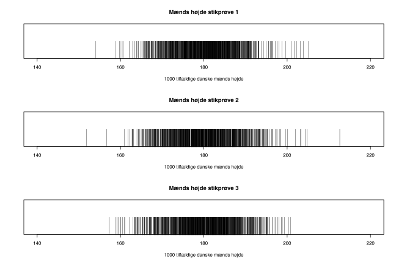
Bemærk hvorledes personerne ligger meget tættere omkring middelværdien 180.4, her er figuren næsten sort. Vi kan se at der er forskellige meget høje og lave personer i de 3 stikprøver. Vi kan indtegne fordelingen af alle danske mænds højder, som en normalfordelings tæthedsfunktion. Når observationerne ligger tættere vil kurven være højere.
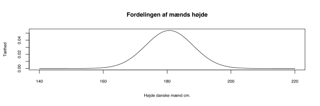

IQ, Popcorn poptider, nedbør, vandstand etc. er normalfordelte fænomener. Tæthedsfunktionen for normalfordelingen er givet ved:
\[ f\left( x, \mu, \sigma \right) = \frac{1}{\sqrt{2 \pi \sigma^2}} e^ { - \frac {\left( x - \mu \right)^2} {2 \sigma^2} }\]
Grafen nedenfor viser 3 normalfordelinger alle med middelværdi \(\mu=0\) og standardafvigelser \(\sigma\) på hhv. 1, 2 and 4.
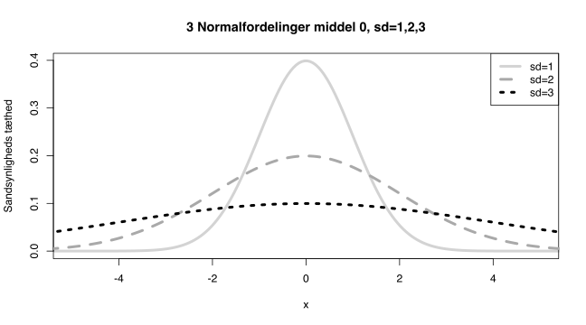
Grafen nedenfor viser 3 normalfordelinger med middelværdier \(\mu\) på hhv. -1, 0, 4 alle med standardafvigelse \(\sigma=1\).
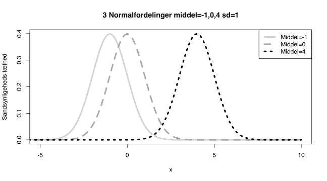
Middelværdi, median og modus/typetal er altid identisk for normalfordelingen, skævhed og kurtosis er 0.
4.1 Normalfordelt Stokastisk variabel
En stokastisk variabel X inden for sandsynlighedsregning, er en variabel hvis værdi påvirkes af tilfældigheder. Når der er tilknyttet et sandsynlighedsmål, kan vi måle sandsynligheden for forskellige udfald.
Hvis sandsynlighedsmålet fx. er normalfordelt skriver vi \(X\sim N(\mu,\sigma)\). Vi kan så beregne sandsynligheder for at X antager forskellige værdier. Ønsker vi at bestemme sandsynligheden for at at få et udfald mindre end fx 3, skriver vi dette som \(P(X<3)\), hvor P står for probability sandsynligheden. Vi skriver altid stort P, lille p betyder proportion andel indenfor statistik. Skal vi bestemme sandsynligheden for at X antager en værdi mellem 3 og 5, skriver vi dette som \(P(3 < X < 5)\).
Ser vi på eksemplet med danske mænds højde, kan vi definere en normalfordelt stokastisk variabel \(X\sim N(\mu=180.4,\sigma=7.42)\). Skal vi bestemme sandsynligheden for at en person er lavere end 178 cm, skriver vi dette som \(P(X<178)\). Vi kan beregne sandsynligheder i det meste software. I Excel ville vi beregne \(P(X<178)=0.37\), ved hjælp af formlen =NORMAL.FORDELING(178;180,4;7,42;1).
4.1.1 Standard normalfordelingen
Der findes en særlig kendt normalfordeling, kaldet standard normalfordelingen, denne har parametrene \(\mu=0\) og \(\sigma=1\), hvilket altså betyder den har middel, median og modus 0 og standardafvigelse 1. Standard normalfordelingen ses i figuren herunder.

Ligesom for andre fordelinger, kan vi beregne fraktiler for alle normalfordelinger, vi kan således beregne fx. 5% fraktilen -1.64 for standard normalfordelingen. Dette betyder at der er 5% sandsynlighed for at få værdier mindre end -1.64 og således 95% sandsynlighed for at få værdier der er større end -1.64, dette er illustreret i figuren. 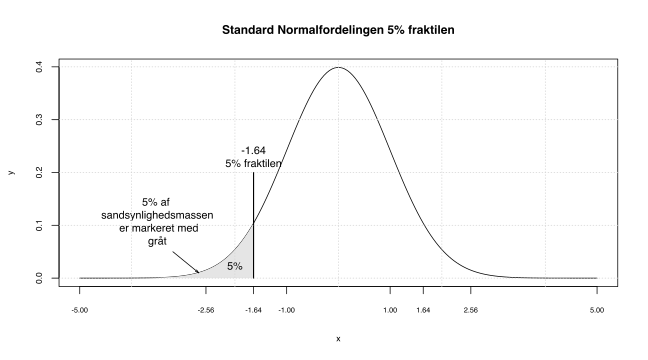
På grund af symmetrien for normalfordelingen, og da standardnormalfordelingen har middel 0 bliver 95% fraktilen bliver 1.64. Denne er vist i figuren herunder. Der gælder at hvis en vilkårlig \(\alpha\)%-fraktil for standard normalfordelingen er \(-a\), bliver \(1-\alpha\)%-fraktilen \(a\). 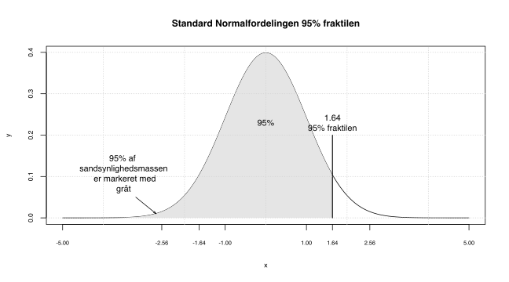
4.1.2 68% Normalfordelingen
Hvis man trækker 1 gange standardafvigelsen \(\sigma\) fra \(\mu\) og lægger 1 gange standardafvigelsen til \(\mu\), får man for en vilkårlig normalfordeling altid 68.27% af sandsynlighedsmassen. Denne egenskab er illustreret for standard normalfordelingen nedenfor, arealet er markeret med mørkegråt, dermed har man naturligvis 15.87% i hver hale da arealet under tæthedfunktionen er 1 eller 100%.
\[P(\mu-1\cdot \sigma \leq X \leq \mu+1\cdot \sigma) \approx 0.68\]
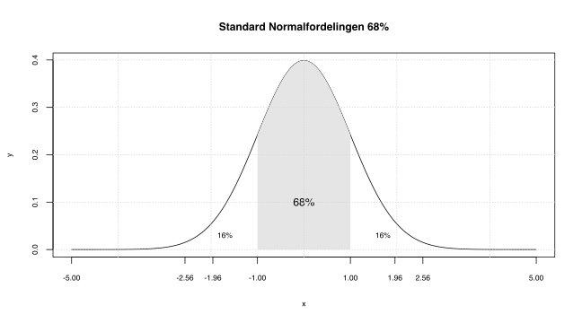
4.1.3 90% Normalfordelingen
Hvis man trækker 1.6448 gange standardafvigelsen \(\sigma\) fra \(\mu\) og lægger 1.6448 gange standardafvigelsen til \(\mu\), får man i normalfordelingen altid 90% af sandsynlighedsmassen.
\[P(\mu-1.64\cdot \sigma \leq X \leq \mu+1.64\cdot \sigma) \approx 0.9\]
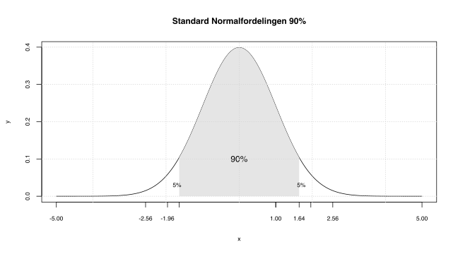
4.1.4 95% Normalfordelingen
Hvis man trækker 1.96 gange standardafvigelsen \(\sigma\) fra \(\mu\) og lægger 1.96 gange standardafvigelsen til \(\mu\), får man i normalfordelingen altid 95% af sandsynlighedsmassen. Denne z-score 0.975 fraktilen i standard normalfordelingen, er meget vigtig, vi bruger den fx. når vi beregner 95% konfidensinterval for middelværdien. Vi har alså følgende resultat:
\[P(\mu-1.96\cdot \sigma \leq X \leq \mu+1.96\cdot \sigma)\approx 0.95\]
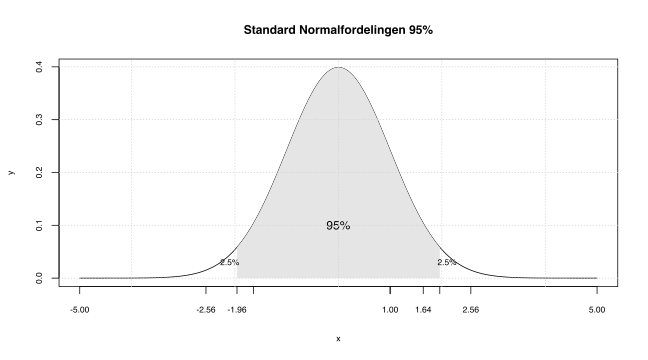
4.1.5 99% Normalfordelingen
Hvis man trækker 2.5758 gange standardafvigelsen \(\sigma\) fra \(\mu\) og lægger 2.5758 gange standardafvigelsen til \(\mu\), får man i normalfordelingen altid 99% af sandsynlighedsmassen. Vi illustrerer igen for standard normalfordelingen, men resultatet er ækvivalent for samtlige normalfordelinger.
\[P(\mu-2.58\cdot \sigma \leq X \leq \mu+2.58\cdot \sigma)\approx 0.99\]
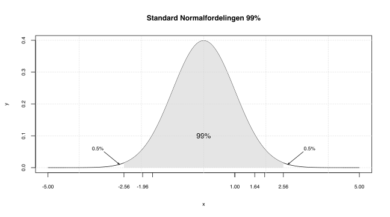
4.1.6 Addition af normalfordelinger
Der er en lang række gode egenskaber for normalfordelinger, der gør disse fordelinger særlig nemme at arbejde med. Hvis man har n uafhængige stokastiske normalfordelte variable \(X_1\sim N(\mu_1,\sigma^2_1),X_2\sim N(\mu_2,\sigma^2_2)...X_n\sim N(\mu_n,\sigma^2_n)\), så er deres sum Z også normalfordelt med parametrene \(Z\sim N(\mu_1+\mu_2...+\mu_n,\sigma^2_1+\sigma^2_2+..+\sigma^2_n)\) Middelværdien er altså summen af middelværdierne, variansen er summen af varianserne. Husk der er tale om summen af varianserne ikke standardafvigelserne.
Hvis man fx. har en investering med fremtidige tilbagediskonterede cashflows 4, 2 og 3 fra tidspunkt 1, 2 og 3, hvor der er en usikkerhed på de tilbagediskonterede fremtidige cashflows beskrevet ved variansen for de 3 cashflows 2, 3, 4. Vi antager de fremtidige tilbagediskonterede cashflows er normalfordelte, hvor den forventede værdi for tilbagediskonterede cashflows er middelværdierne og usikkerheden for betalingsstrømmene beskrives ved variansen. Dette giver god mening, jo længere ude i fremtiden, des større usikkerhed dvs. varians. \(X_1\sim N(\mu =4,\sigma^2=2)\) \(X_2\sim N(\mu =2,\sigma^2=3)\) \(X_3\sim N(\mu =3,\sigma^2=4)\) Det betyder summen af de tilbagediskonterede cashflows er normalfordelt med parametrene \(X_{cashflow}\sim N(\mu =4+2+3=9,\sigma^2=2+3+4=9)\) Man kan således bruge reglen om addition af normalfordelinger, til at få et overblik over det samlede forventede tilbagediskonterede cashflow og usikkerheden.
4.1.7 Linearkombinationer af normalfordelinger
Vi kan sammensætte n normalfordelte variable \(X_1\sim N(\mu_1,\sigma^2_1),X_2\sim N(\mu_2,\sigma^2_2)...X_n\sim N(\mu_n,\sigma^2_n)\) med en vektor af af n reelle tal \((a_1,a_2,..a_n)\) samt en konstant b, denne linearkombinationen Y også normalfordelt med parametrene \(Y\sim N(a_1 \cdot \mu_1+a_2 \cdot \mu_2...+a_n \cdot \mu_n+b,a_1^2 \cdot \sigma^2_1+a_2^2 \cdot \sigma^2_2+..+a_n^2 \cdot \sigma^2_n)\)
Betragter man fx 3 aktiver, der kan beskrives ved normalfordelinger, med forventet afkast \(\mu_1=120, \mu_2=100\ og\ \mu_3=150\) og usikkerhed \(\sigma^2_1=3, \sigma^2_3=9\ og\ \sigma^2_3=4\), samt et risikofrit aktiv med afkast 100. Har man en portefølje der indholder hhv. 3, 2, 4 enheder af aktiver 1, 2 og 3 samt 1 risikofrit aktiv. Kan det forventede afkast af den samlede portefølje beskrives ved en normalfordelt stokastisk variabel med parametrene: \[X_{portefø\ lje}\sim N(a_1 \cdot \mu_1+a_2 \cdot \mu_2...+a_n \cdot \mu_n+b,a_1^2 \cdot \sigma^2_1+a_2^2 \cdot \sigma^2_2+..+a_n^2 \cdot \sigma^2_n)=\] \[X_{portefø\ lje}\sim N(\mu=3 \cdot 120+2 \cdot 100+4 \cdot 150+100=1260,\sigma^2=3^2 \cdot 3+2^2 \cdot 9+4^2 \cdot 4=127)\]
4.1.8 Transformation af normalfordelinger
En anden god egenskab ved normalfordelinger, er at de kan transformeres til standardnormalfordelingen, dette gør det nemmere at beregne sandsynligheder hvis man ikke har software til at udregne disse.
\[X\sim N(\mu,\sigma^2)\rightarrow\ Z=\frac{X-\mu}{\sigma}\sim N(\mu=0,\sigma^2=1)\] Vi kan nu beregne sandsynligheder for at den oprindelige normalfordelte variabel er mindre end a \(P(X<a)\), ved hjælp af standard normalfordelingen \(P(Z<\frac{a-\mu}{\sigma})\).
Hvis vi ser på investeringen ovenfor \(X_{cashflow}\sim N(\mu =9,\sigma^2=9)\) kan vi transformere \(X_{cashflow}\) til standard normalfordelingen.
\[X_{cashflow}\sim N(\mu =9,\sigma^2=9)\rightarrow\ Z=\frac{X-9}{3}\sim N(\mu=0,\sigma^2=1)\] Vi kan bestemme, hvor stor sandsynligheden er, for at de fremtidige diskonterede cashflows er negative vha. standardnormalfordelingen dvs. \[P(X_{cashflow}<0)= P(Z<\frac{0-9}{3}=-3)=0135\%\] Nedenfor ses begge fordelinger med 0.00135 fraktilen. 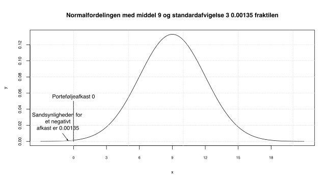
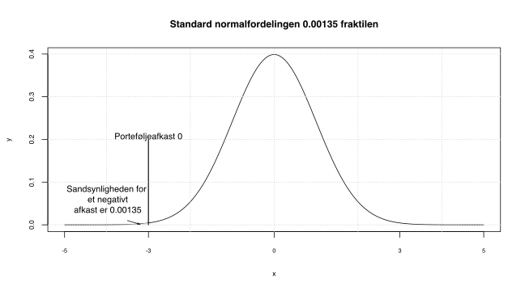
4.2 Normalfraktildiagram
Hvis vi har mindre stikprøver, skal vi sikre os at data stammer fra normalfordelte populationer. Dette kan vi gøre vha. normalfraktildiagrammer, disse skal ligge pænt omkring den rette linje. Har man en lille stikprøve og ønsker at sikre sig data stammer fra en normalfordelt population, kan man i Freestat indsætte stikprøven i 1 kvantitativ stikprøve og sikre sig at punkterne ligger pænt omkring den rette linje. En stikprøve er lille, når den er mindre end 30 observationer. Det kan ofte være svært at se om data stammer en normalfordeling. Som det fremgår af nedenstående normalfraktildiagrammer er kun 4 af de 18 normalfordelte, specielt ved de mindre stikprøver er det svært at se præcis om data er normalfordelte. Man kan generelt sige at afvigelser fra den rette linje i enderne, er mindre kritiske en afvigelser omkring midten. Hvis man i forbindelse med analyse fx. konfidensinterval eller hypotesetest, konstaterer data ikke er normalfordelte, bør man bemærke dette og illustrere vha. normalfraktildiagrammet. Når man har rapporteret problemet gennemfører man herefter analysen.
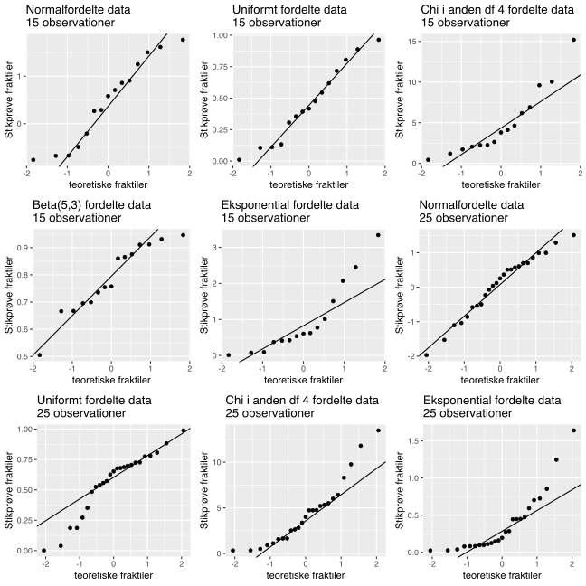
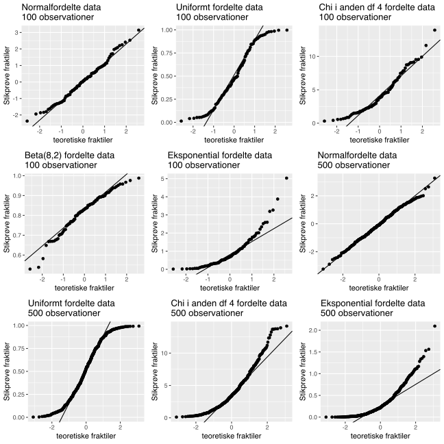
4.3 Parametre og parameter-estimater
4.3.0.1 Stikprøvefordelingen
4.3.0.2 Stikprøvefordelingen 2
4.3.0.3 Parameter-estimat
Når man indsamler en stikprøve fx 100 studerendes højde, kan vi bruge denne stikprøve til at sige noget om alle studerendes højde. I dette tilfælde er alle studerende, det vi kalder populationen, det er dem vi ønsker at vide noget om. Den gennemsnitlige højde i populationen er den ukendte parameter \(\mu\). Den gennemsnitlige højde på de studerende i stikprøven kalder vi parameterestimatet, estimatet betyder vores gæt på den ukendte sande gennemsnitlige højde på alle studerende, altså parameteren \(\mu\). Vi bruger betegnelsen \(\hat{\mu}\), når vi taler om paramterestimater, så vores gæt angiver vi med en hat \(\hat{}\). Da paramterestimatet er et gæt, er vi interesserede i kvaliteten af vort gæt. Vi ser nedenfor på stikprøvefordelingen, som vi kan bruge til at måle præcision af estimatet ved hjælp af konfidensintervaller.
4.3.1 Parameter-estimat for middelværdi
Hvis vi ønsker at udtale os om det gennemsnitlige daglige afkast af Tryg aktien den sande middelværdi \(\mu\), kan vi estimere det gennemsnitlige afkast i populationen, ved gennemsnittet i stikprøven \(\bar{x}\).
\[\hat{\mu}=\bar{x}=\frac{\sum_1^n (x_i)}{n}=\frac{5.274}{146}=0.0361\]
4.3.2 Parameter-estimat for standardafvigelsen
Vi har nævnt at standardafvigelsen af afkastet, er en vigtig faktor, når en investor skal bestemme volatiliteten i en aktie. Vi kan estimere den sande standardafvigelse i populationen \(\sigma\), ud fra estimatet af standardafvigelsen \(\hat{\sigma}\) vha. stikprøven. For Tryg aktien regnes dette ud som:
\[Parameteren\ \sigma\ estimeres\ ved\ \hat{\sigma}=S=\sqrt[]{\frac{\sum_1^n (x_i-\bar{x})^2}{n-1}}=\sqrt[]{\frac{122.8538}{146-1}}=0.92\]
Nedenfor er en oversigt over vigtige parametre samt deres estimater. Vi er udover estimatet interesseret i, hvor sikre vi er på dette estimat, her er det vi vil benytte konfidensintervaller.
| Parameter | Estimat | Beregning af estimatet |
|---|---|---|
| \(Andelen\ p\) | \(\hat{p}\) | \(\hat{p}=\frac{x}{n}=\frac{antal\ succeser}{antal\ trials}\) |
| \(Middel\ \mu\) | \(\hat{\mu}\) | \(\hat{\mu}=\bar{x}=\frac{\sum_1^n (x_i)}{n}\) |
| \(Variansen\ \sigma^2\) | \(\hat{\sigma}^2\ eller \ s^2\) | \(s^2=\frac{\sum_1^n (x_i-\bar{x})^2}{n-1}\) |
| \(Spredningen\ \sigma\) | \(\hat{\sigma}\ eller \ s\) | \(s=\sqrt[]{\frac{\sum_1^n (x_i-\bar{x})^2}{n-1}}\) |
4.3.3 Data- stikprøve- og populationsfordelingen
Vi sondrer mellem flere forskellige typer af fordelinger.
Populations fordelingen af størrelse N. Denne er ikke kendt, men vi ønsker at drage slutninger om fordelingen, baseret på en stikprøve.
Datafordeligen er fordelingen af den stikprøve af størrelse n, vi har indsamlet.
Stikprøve fordelingen fremkommer, hvis man fra populationen, udtager alle stikprøver, af størrelse n. Fordelingen af parameter estimaterne kaldes stikprøve fordelingen.
Vi forestiller os nu at Finanstilsynet, ønsker at estimere det gennemsnitlige indestående på danskernes nem konti. Den ukendte populations parameter Finanstilsynet er interesseret er altså \(\mu\). Her er populationen samtlige nem konti, hvis der er fx. er 3 mio konti er N altså 3 mio. Vi ved at der i populationen, vil være personer med meget store indståender på deres konti, nok flere mio. DKK. og nogle konti med negativt indestående. Sandsynligvis vil standard afvigelsen \(\sigma\) være stor. Vi kan formode at fordelingen vil være højreskæv, i en eller anden grad, da der vil være enkelte ekstremt store indeståender der danner en lang hale mod højre.
Hvis vi simpelt tilfældigt udvælger en stikprøve på n=10000, vil gennemsnittet \(\bar{x}\) (som jo er parameterestimatet \(\hat{\mu}\)) i stikprøven udviske outliers.
Hvis man udtog alle mulige stikprøver af populationen og beregnede samtlige gennemsnit, ville disse gennemsnit ligge ganske tæt omkring den sande parameter \(\mu\). Denne sandsynlighedsfordeling af stikprøve gennemsnit er stikprøvefordelingen Vi kan med den centrale grænseværdisætning vise at stikprøvefordelingen vil være approximativt normal med middelværdi \(\mu\) og standardafvigelse \(\frac{\sigma}{\sqrt[]{10000}}\). Standardafvigelsen for stikprøvefordelingen vil være 100 gange mindre, end standardafvigelsen for populationen. Bemærk havde stikprøven været på n=100 i stedet, ville standard afvigelsen for stikprøvefordelingen kun være \(\sqrt[]{100}=10\) gange mindre end standard afvigelsen for populationen.
4.3.4 Den centrale grænseværdisætning CLT
Den centrale grænseværdisætning CLT siger, at hvis man med tilbagelægning udtager tilstrækkeligt store stikprøver af størrelse n af en population, vil stikprøvefordelingen af middelværdien være approximativt normal. Er populationsfordelingen hverken symmetrisk eller mesokurtisk vil stikprøve fordelingen stadig være tilnærmelsesvist normal, når blot stikprøve størrelsen er tilstrækkelig stor (mange bøger sætter denne grænse ved 30).
Nedenfor har vi en højreskæv populationsfordeling med \(\mu=8\) og \(\sigma=4\), dette er jo den sædvanligvis ukendte population, fra hvilken vi trækker en stikprøve på størrelse n.
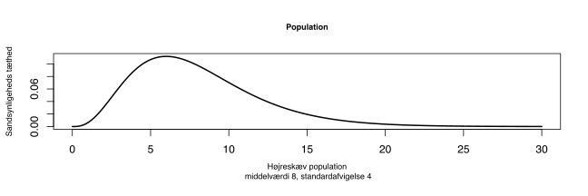
Middelværdien for stikprøvefordelingen skrives i mange bøger med notationen \(\mu_{\bar{X}}\) er: \[\mu_{\bar{X}}=\mu\]
Standardafvigelsen for stikprøvefordelingen kaldes standardfejlen for middelværdien (engelsk standard error of the mean SEM eller SE) \(\sigma_{\bar{X}}\) er:
\[SEM=\sigma_{\bar{X}}=\frac{\sigma}{\sqrt[]{n}}\]
Vi bruger standardfejlen for middelværdien SEM til at beregne konfidensintervaller som vi ser på senere. Der gælder jo mindre SEM jo smallere konfidensinterval, og når stikprøvestørrelsen bliver større bliver SEM mindre. Det giver jo god mening, større stikprøve giver mindre SEM og dermed smallere konfidensinterval dvs. større præcision.
På figurerne er udtaget 3 gange 100 stikprøver af størrelse n hhv. 30, 100 og 1000. På hver figur er gennemsnittene af de 100 stikprøver angivet. Der er altså 100 pinde i hvert diagram. Bemærk CLT siger at for alle tre stikprøvefordelinger er \(\mu=8\), det ses af figurerne at gennemsnittene i stikprøverne er centreret omkring middelværdien i populationen \(\mu=8\).
Vi kan ligeledes se at variationen falder (stikprøvegennemsnittene ligger mere snævert), når stikprøvestørrelsen vokser.

På de 3 figurer nedenfor ses de tilsvarende stikprøvefordelinger.
Når stikprøvestørrelsen er n=30, kan standard fejlen da \(\sigma=4\) jvf. CLT udregnes til:
\[SEM=\sigma_{\bar{X}}=\frac{\sigma}{\sqrt[]{n}}=\frac{4}{\sqrt[]{30}}=0.73\]
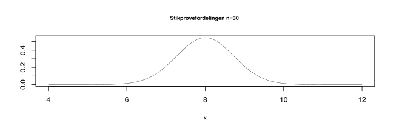
Når stikprøvestørrelsen er n=100, kan standard fejlen da \(\sigma=4\) jvf. CLT udregnes til:
\[SEM=\sigma_{\bar{X}}=\frac{\sigma}{\sqrt[]{n}}=\frac{4}{\sqrt[]{100}}=0.4\]
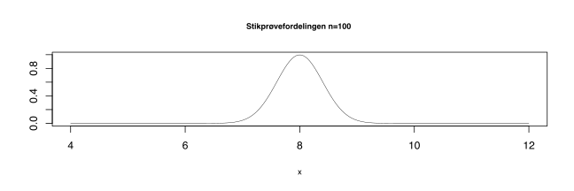
Når stikprøvestørrelsen er n=1000, kan standard fejlen da \(\sigma=4\) jvf. CLT udregnes til:
\[SEM=\sigma_{\bar{X}}=\frac{\sigma}{\sqrt[]{n}}=\frac{4}{\sqrt[]{1000}}=0.13\]

Da stikprøvefordelingerne er normalfordelte, ved vi at hvis man trækker 1.96 gange standard fejlen SEM \(\frac{\sigma}{\sqrt[]{n}}\) fra middelværdien \(\mu\) og lægger 1.96 gange SEM \(\frac{\sigma}{\sqrt[]{n}}\) til middelværiden \(\mu\), er der i hver hale 2.5% og imellem halerne 95% af sandsynligheden. Vi kan altså beregne følgende nedre og øvre intervalgrænser for de tre stikprøvefordelinger, jo større stikprøve jo smallere interval.
Vi udregner nedre intervalgrænse når n er 30 som:
\(\mu-1.96\cdot\frac{\sigma}{\sqrt[]{n}}=8-1.96\cdot\frac{4}{\sqrt[]{30}}=6.57\)
Vi udregner øvre intervalgrænse når n er 30 som:
\(\mu+1.96\cdot\frac{\sigma}{\sqrt[]{n}}=8+1.96\cdot\frac{4}{\sqrt[]{30}}=9.43\)
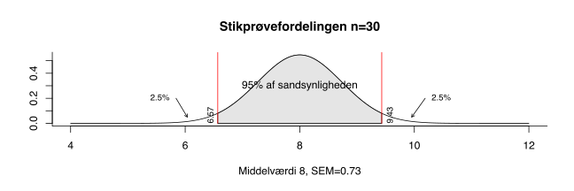
Vi udregner nedre intervalgrænse når n er 100 som:
\(\mu-1.96\cdot\frac{\sigma}{\sqrt[]{n}}=8-1.96\cdot\frac{4}{\sqrt[]{100}}=7.22\)
Vi udregner øvre intervalgrænse når n er 100 som:
\(\mu+1.96\cdot\frac{\sigma}{\sqrt[]{n}}=8+1.96\cdot\frac{4}{\sqrt[]{100}}=8.78\)
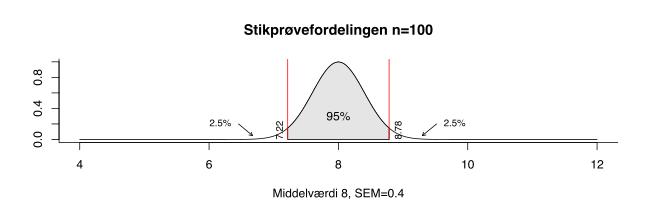
Vi udregner nedre intervalgrænse når n er 1000 som:
\(\mu-1.96\cdot\frac{\sigma}{\sqrt[]{n}}=8-1.96\cdot\frac{4}{\sqrt[]{1000}}=7.75\)
Vi udregner øvre intervalgrænse når n er 1000 som:
\(\mu+1.96\cdot\frac{\sigma}{\sqrt[]{n}}=8+1.96\cdot\frac{4}{\sqrt[]{1000}}=8.25\)
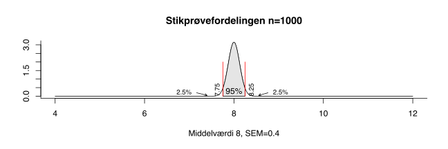
4.4 Frihedsgrader
Frihedsgrader eller degrees of freedom df betyder, hvor mange observationer kan variere frit. Hvis man fx. har en stikprøve med 4 observationer \({1,2,2,3}\) og ønsker at estimere (gætte på) gennemsnittet i populationen \(\mu\), så bliver vores bedste estimat for (gæt på) gennemsnittet \(\hat{\mu}=\bar{x}=\frac{1+2+2+3}{4}=\frac{8}{4}=2\). Her er antallet af observationer, der kan variere frit, når gennemsnittet \(\bar{x}=2\) er givet \(4-1=3\), hvilket er antallet af frihedsgrader. Hvis de 3 første observationer er \({1,2,2}\), vil den sidste observation være givet som 3, for at gennemsnittet bliver 2. Havde vi haft de 3 første observationer var \({1,1,1}\) ville den sidste observation være givet som 5 for at gennemsnittet var 2. Ved 4 observationer, er der således \(4-1=3\) frihedsgrader, ved 10 observationer, er der således \(10-1=9\) frihedsgrader osv. Antallet af frihedsgrader når vi estimerer middelværdien, svarer til antallet af observationer i stikprøven n minus 1.
4.5 t-fordelingen
Useendet af t-fordelinger bestemmes af parameteren antal frihedsgrader. Samtlige t-fordelinger har middelværdi \(\mu=0\) og approximerer/tilnærmer sig standard normalfordelingen, når antallet af frihedsgrader vokser. Vi benytter populært sagt t-fordelinger i stedet for z-fordelinger, når populations variansen \(\sigma^2\) er ukendt. Antallet af frihedsgrader for t-fordelingen, ved konfidensinterval for middelværdi, svarer til antallet af observationer i stikprøven n minus 1.
I figuren er indtegnet 3 t-fordelinger med hhv. 5, 10 og 100 frihedsgrader (df degrees of fredom). Vi kan se fordelingerne har tykkere haler end normalfordelingen og når antallet at frihedsgrader er 100 ser z- og t-fordelingen næsten identiske ud.
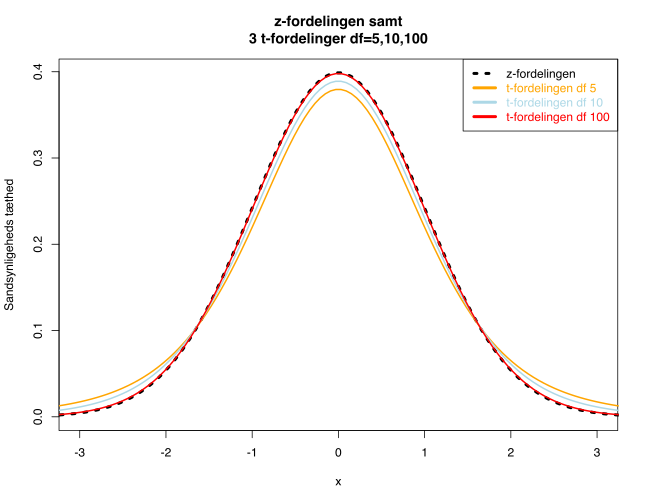